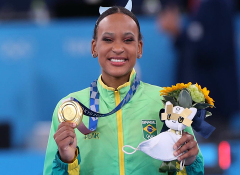
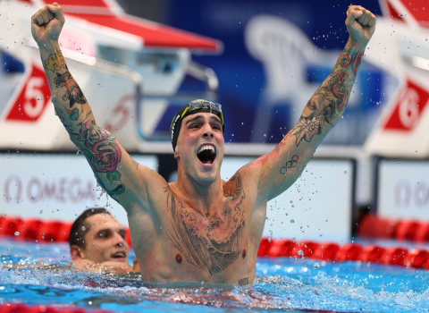
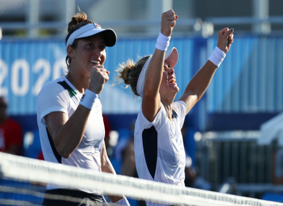
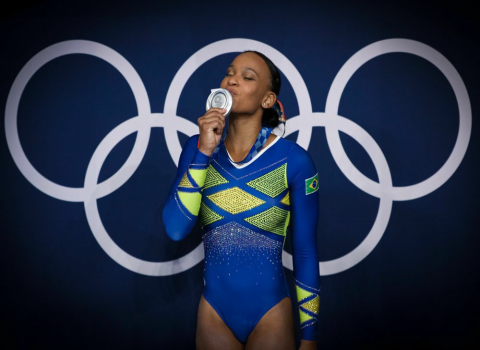
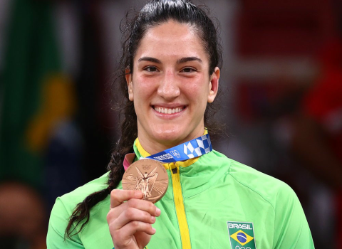
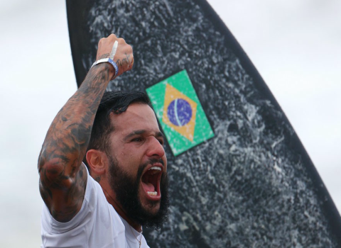
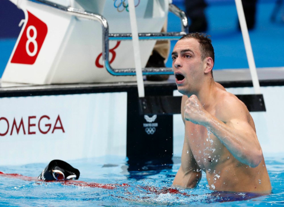
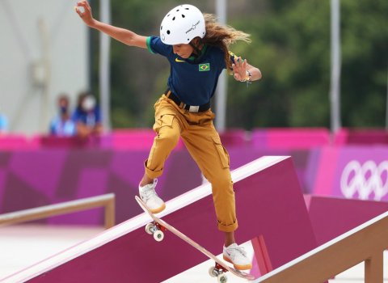

Rebeca salta para a história
Depois da prata no individual geral, volta a subir ao pódio e conquista sua segunda medalha nos jogos. Rebeca é a primeira brasileira a ganhar duas medalhas em uma edição dos jogos.


Depois da prata no individual geral, volta a subir ao pódio e conquista sua segunda medalha nos jogos. Rebeca é a primeira brasileira a ganhar duas medalhas em uma edição dos jogos.

Fratus faz história, conquista o bronze e dá ao país 4º medalha na história dos 50m livre nas Olimpíadas.

Após semana intensa nas Olimpíadas de Tóquio 2020, dupla brasileira comemora medalha olímpica inédita: "Não consigo acreditar ainda no que a gente conseguiu".

Depois de conquistar a prata no individual geral, Rebeca Andrade volta a competir em busca da segunda conquista nas Olimpíadas de Tóquio.

Brasileira vence sul-coreana Hyunji Yoon por ippon com imobilização e conquista terceira medalha olímpica na carreira.

O feito histórico de Ítalo Ferreira, ao conquistar a primeira medalha de ouro do surfe nas Olimpíadas, trouxe grandes nomes da modalidade repercutir esse marco.

Scheffer surpreende nos 200m livre e coloca o país no pódio em prova que Gustavo Borges fez história em Atlanta-1996 em 14ª medalha olímpica para o país na modalidade.

Rayssa Leal faz história e é prata no skate street nas Olimpíadas de Tóquio. Maranhense de 13 anos faz grande prova e é superada apenas por japonesa.